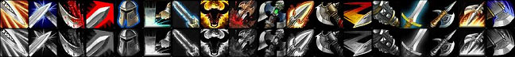
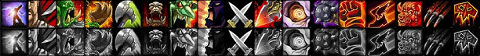
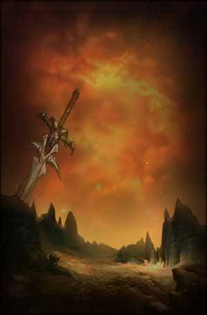

<html>
<head>
<script>
var _
var data=[]
data.n=8
_=data[0]=[]
_.n="Arms"
_=data[0][0]=[1,['','s']]
_.n="Improved Heroic Strike"
_.d="Reduces the cost of your Heroic Strike ability by $ Rage point$."
_.m=3
_.x=1
_.y=0
_=data[0][1]=[1]
_.n="Deflection"
_.d="Increases your Parry chance by $%."
_.m=5
_.x=2
_.y=0
_=data[0][2]=[[15,25,35]]
_.n="Improved Rend"
_.d="Increases the bleed damage done by your Rend ability by $%."
_.m=3
_.x=3
_.y=0
_=data[0][3]=[3]
_.n="Improved Charge"
_.d="Increases the amount of Rage generated by your Charge ability by $."
_.m=2
_.x=1
_.y=5
_=data[0][4]=[5]
_.n="Tactical Mastery"
_.d="You retain up to $ of your Rage points when you change stances."
_.m=5
_.x=2
_.y=5
_=data[0][5]=[[1,2,4],['','s']]
_.n="Improved Thunder Clap"
_.d="Reduces the cost of your Thunder Clap ability by $ Rage point$."
_.m=3
_.x=4
_.y=5
_=data[0][6]=[25]
_.n="Improved Overpower"
_.d="Increases the critical strike chance of your Overpower ability by $%."
_.m=2
_.x=1
_.y=10
_=data[0][7]=[]
_.n="Anger Management"
_.d="Increases the time required for your Rage to decay while out of combat by 30%."
_.m=1
_.x=2
_.y=10
_.r=[4,5]
_=data[0][8]=[20]
_.n="Deep Wounds"
_.d="Your critical strikes cause the opponent to bleed, dealing $% of your melee weapon's average damage over 12 sec."
_.m=3
_.x=3
_.y=10
_.r=[2,3]
_=data[0][9]=[1]
_.n="Two-Handed Weapon Specialization"
_.d="Increases the damage you deal with two-handed melee weapons by $%."
_.m=5
_.x=2
_.y=15
_=data[0][10]=[10]
_.n="Impale"
_.d="Increases the critical strike damage bonus of your abilities in Battle, Defensive, and Berserker stance by $%."
_.m=2
_.x=3
_.y=15
_.r=[8,3]
_=data[0][11]=[1]
_.n="Axe Specialization"
_.d="Increases your chance to get a critical strike with Axes by $%."
_.m=5
_.x=1
_.y=20
_=data[0][12]=[]
_.n="Sweeping Strikes"
_.d="Your next 5 melee weapon swings strike an additional nearby opponent."
_.m=1
_.x=2
_.y=20
_.t=['30 Rage','','Instant','30 sec cooldown','Requires Battle Stance']
_=data[0][13]=[[1,2,3,4,6]]
_.n="Mace Specialization"
_.d="Gives you a $% chance to stun your target for 3 sec with a Mace."
_.m=5
_.x=3
_.y=20
_=data[0][14]=[1]
_.n="Sword Specialization"
_.d="Gives you a $% chance to get an extra attack on the same target after dealing damage with your Sword."
_.m=5
_.x=4
_.y=20
_=data[0][15]=[1]
_.n="Polearm Specialization"
_.d="Increases your chance to get a critical strike with Polearms by $%."
_.m=5
_.x=1
_.y=25
_=data[0][16]=[5]
_.n="Improved Hamstring"
_.d="Gives your Hamstring ability a $% chance to immobilize the target for 5 sec."
_.m=3
_.x=3
_.y=25
_=data[0][17]=[]
_.n="Mortal Strike"
_.d="A vicious strike that deals weapon damage plus 160 and wounds the target, reducing the effectiveness of any healing by 50% for 10 sec."
_.m=1
_.x=2
_.y=30
_.z=4
_.r=[12,1]
_.t=['30 Rage','5 yd range','Instant','6 sec cooldown','Requires Melee Weapon']
_=data[1]=[]
_.n="Fury"
_=data[1][0]=[10]
_.n="Booming Voice"
_.d="Increases the area of effect and duration of your Battle Shout and Demoralizing Shout by $%."
_.m=5
_.x=2
_.y=0
_=data[1][1]=[1]
_.n="Cruelty"
_.d="Increases your chance to get a critical strike with melee weapons by $%."
_.m=5
_.x=3
_.y=0
_=data[1][2]=[8]
_.n="Improved Demoralizing Shout"
_.d="Increases the Attack Power reduction of your Demoralizing Shout by $%."
_.m=5
_.x=2
_.y=5
_=data[1][3]=[8]
_.n="Unbridled Wrath"
_.d="Gives you a $% chance to generate an additional Rage point when you deal melee damage with a weapon."
_.m=5
_.x=3
_.y=5
_=data[1][4]=[40]
_.n="Improved Cleave"
_.d="Increases the bonus damage done by your Cleave ability by $%."
_.m=3
_.x=1
_.y=10
_=data[1][5]=[]
_.n="Piercing Howl"
_.d="Causes all enemies near the warrior to be dazed for 6 sec."
_.m=1
_.x=2
_.y=10
_.t=['10 Rage','','Instant']
_=data[1][6]=[1]
_.n="Blood Craze"
_.d="Regenerates $% of your total health over 6 sec after being the victim of a critical strike."
_.m=3
_.x=3
_.y=10
_=data[1][7]=[5]
_.n="Improved Battle Shout"
_.d="Increases the Attack Power bonus of your Battle Shout by $%."
_.m=5
_.x=4
_.y=10
_=data[1][8]=[5]
_.n="Dual Wield Specialization"
_.d="Increases the damage done by your offhand weapon by $%."
_.m=5
_.x=1
_.y=15
_=data[1][9]=[[2,5]]
_.n="Improved Execute"
_.d="Reduces the Rage cost of your Execute ability by $."
_.m=2
_.x=2
_.y=15
_=data[1][10]=[5]
_.n="Enrage"
_.d="Gives you a $% melee damage bonus for 12 sec up to a maximum of 12 swings after being the victim of a critical strike."
_.m=5
_.x=3
_.y=15
_=data[1][11]=[0.1]
_.n="Improved Slam"
_.d="Decreases the casting time of your Slam ability by $ sec."
_.m=5
_.x=1
_.y=20
_=data[1][12]=[]
_.n="Death Wish"
_.d="When activated, increases your physical damage by 20% and makes you immune to Fear effects, but lowers your armor and all resistances by 20%. Lasts 30 sec."
_.m=1
_.x=2
_.y=20
_.t=['10 Rage','','Instant','3 min cooldown']
_=data[1][13]=[5]
_.n="Improved Intercept"
_.d="Reduces the cooldown of your Intercept ability by $ sec."
_.m=2
_.x=4
_.y=20
_=data[1][14]=[5]
_.n="Improved Berserker Rage"
_.d="The Berserker Rage ability will generate $ Rage when used."
_.m=2
_.x=1
_.y=25
_=data[1][15]=[[10,15,20,25,30]]
_.n="Flurry"
_.d="Increases your attack speed by $% for your next 3 swings after dealing a critical strike."
_.m=5
_.x=3
_.y=25
_.r=[10,5]
_=data[1][16]=[]
_.n="Bloodthirst"
_.d="Instantly attack the target, causing damage equal to 45% of your attack power. In addition, the next 5 successful melee attacks will restore 20 health. This effect lasts 8 sec."
_.m=1
_.x=2
_.y=30
_.z=4
_.r=[12,1]
_.t=['30 Rage','5 yd range','Instant','6 sec cooldown']
_=data[2]=[]
_.n="Protection"
_=data[2][0]=[1,20]
_.n="Shield Specialization"
_.d="Increases your chance to block attacks with a shield by $% and has a $% chance to generate 1 Rage when a block occurs."
_.m=5
_.x=2
_.y=0
_=data[2][1]=[2]
_.n="Anticipation"
_.d="Increases your Defense skill by $."
_.m=5
_.x=3
_.y=0
_=data[2][2]=[[2,5]]
_.n="Improved Bloodrage"
_.d="Increases the instant Rage generated by your Bloodrage ability by $."
_.m=2
_.x=1
_.y=5
_=data[2][3]=[2]
_.n="Toughness"
_.d="Increases your armor value from items by $%."
_.m=5
_.x=3
_.y=5
_=data[2][4]=[3]
_.n="Iron Will"
_.d="Increases your chance to resist stun and charm effects by $%."
_.m=5
_.x=4
_.y=5
_=data[2][5]=[]
_.n="Last Stand"
_.d="When activated, this ability temporarily grants you 30% of your maximum hit points for 20 sec. After the effect expires, the hit points are lost."
_.m=1
_.x=1
_.y=10
_.r=[2,2]
_.t=['Instant','10 min cooldown']
_=data[2][6]=[[0.5,1,2]]
_.n="Improved Shield Block"
_.d="Allows your Shield Block ability to block an additional attack, and increases the duration by $ sec."
_.m=3
_.x=2
_.y=10
_.r=[0,5]
_=data[2][7]=[[15,30,45]]
_.n="Improved Revenge"
_.d="Gives your Revenge ability a $% chance to stun the target for 3 sec."
_.m=3
_.x=3
_.y=10
_=data[2][8]=[3]
_.n="Defiance"
_.d="Increases the threat generated by your attacks by $% while in Defensive Stance."
_.m=5
_.x=4
_.y=10
_=data[2][9]=[1,['','s']]
_.n="Improved Sunder Armor"
_.d="Reduces the cost of your Sunder Armor ability by $ Rage point$."
_.m=3
_.x=1
_.y=15
_=data[2][10]=[1]
_.n="Improved Disarm"
_.d="Increases the duration of your Disarm ability by $ sec."
_.m=3
_.x=2
_.y=15
_=data[2][11]=[1]
_.n="Improved Taunt"
_.d="Reduces the cooldown of your Taunt ability by $ sec."
_.m=2
_.x=3
_.y=15
_=data[2][12]=[[3,5]]
_.n="Improved Shield Wall"
_.d="Increases the effect duration of your Shield Wall ability by $ sec."
_.m=2
_.x=1
_.y=20
_=data[2][13]=[]
_.n="Concussion Blow"
_.d="Stuns the opponent for 5 sec."
_.m=1
_.x=2
_.y=20
_=data[2][14]=[50]
_.n="Improved Shield Bash"
_.d="Gives your Shield Bash ability a $% chance to silence the target for 3 sec."
_.m=2
_.x=3
_.y=20
_.t=['15 Rage','5 yd range','Instant','45 sec cooldown','Requires Melee Weapon']
_=data[2][15]=[2]
_.n="One-Handed Weapon Specialization"
_.d="Increases the damage you deal with One-Handed Melee weapons by $%."
_.m=5
_.x=3
_.y=25
_=data[2][16]=[]
_.n="Shield Slam"
_.d="Slam the target with your shield, causing 342 to 358 damage, modified by your shield block value, and has a 50% chance of dispelling 1 magic effect on the target. Also causes a high amount of threat."
_.m=1
_.x=2
_.y=30
_.z=4
_.r=[13,1]
_.t=['20 Rage','5 yd range','Instant','6 sec cooldown','Requires Shields']
</script>
</head>
<body>
<!--[if lte IE 6]>






<![endif]-->
</body>
</html>